Underactuated Manipulator¶
In this section, the model of an underactuated manipulator is treated.
The system consists of two bars with the mass 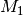 and
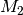 which are connected to each other via the joint  .
The angle between them is designated by 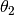. The joint
.
The angle between them is designated by 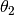. The joint
 connects the first rod with the inertial system, the angle
to the
connects the first rod with the inertial system, the angle
to the  -axis is labeled 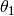.
In the joint the actuating torque
-axis is labeled 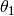.
In the joint the actuating torque  is applied. The
bars have the moments of inertia 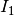 and 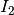. The
distances between the centers of mass to the joints are 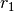 and
is applied. The
bars have the moments of inertia 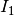 and 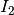. The
distances between the centers of mass to the joints are 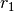 and
 .
.

The modeling was taken from the thesis of Carsten Knoll
(April, 2009) where in addition the inertia parameter  was
introduced.
was
introduced.
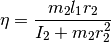
For the example shown here, strong inertia coupling was assumed with
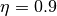. By partial linearization to the output 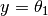 one obtains the state representation with the states
![x = [\theta_1, \dot{\theta}_1, \theta_2, \dot{\theta}_2]^T](../../_images/math/6da61fe06c2df2463181a37044965c25e76f0e9d.png) and
the new input 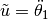.
and
the new input 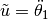.

For the system, a trajectory is to be determined for the transfer
between two equilibrium positions within an operating time of
![T = 1.8 [s]](../../_images/math/de54e9885ba8acb1b3187f17ccdd191539a5b832.png) .
.
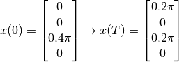
The trajectory of the inputs should be without cracks in the transition
to the equilibrium positions ( ).
).
Source Code¶
# underactuated manipulator
# import trajectory class and necessary dependencies
from pytrajectory.trajectory import Trajectory
import numpy as np
from sympy import cos, sin
from numpy import pi
# define the function that returns the vectorfield
def f(x,u):
x1, x2, x3, x4 = x # state variables
u1, = u # input variable
e = 0.9 # inertia coupling
s = sin(x3)
c = cos(x3)
ff = np.array([ x2,
u1,
x4,
-e*x2**2*s-(1+e*c)*u1
])
return ff
# system state boundary values for a = 0.0 [s] and b = 1.8 [s]
xa = [ 0.0,
0.0,
0.4*pi,
0.0]
xb = [ 0.2*pi,
0.0,
0.2*pi,
0.0]
# boundary values for the inputs
g = [0.0, 0.0]
# create trajectory object
T = Trajectory(f, a=0.0, b=1.8, xa=xa, xb=xb, g=g)
# also alter some method parameters to increase performance
T.setParam('su', 20)
T.setParam('kx', 3)
# run iteration
T.startIteration()
# show results
T.plot()